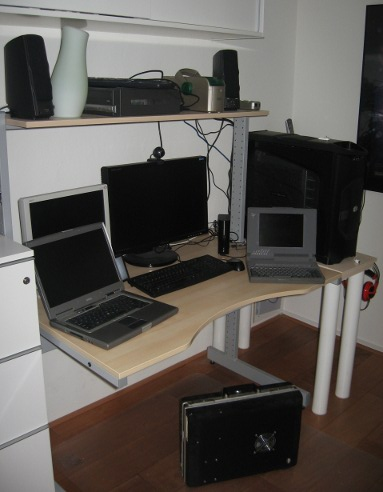
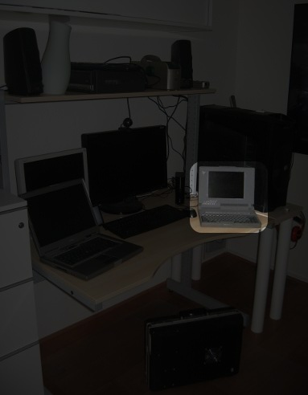
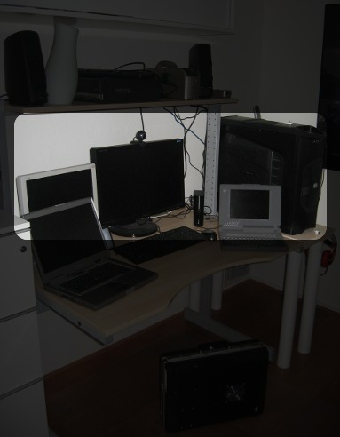
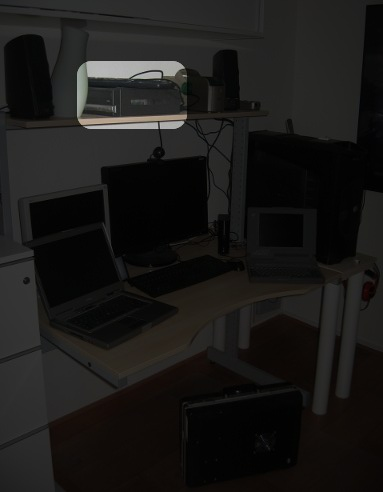
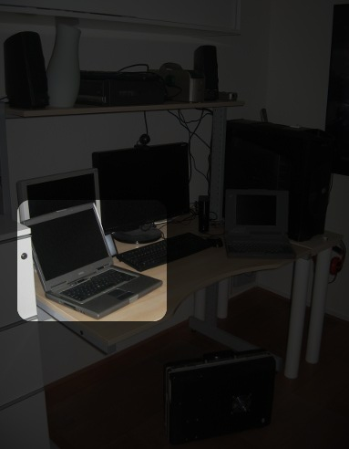

background: url('/cms/sites/default/files/images/mypcmap_r2d2.jpg');
background: url('/cms/sites/default/files/images/mypcmap_dop.jpg');
background: url('/cms/sites/default/files/images/mypcmap_jas.jpg');
background: url('/cms/sites/default/files/images/mypcmap_snoer.jpg');
background: url('/cms/sites/default/files/images/mypcmap_darkyoda.jpg');





by Martin @ 12:17 28 March 2010
When I got my new optical drive with lightscribe support, I thought getting lightscribe to work in Ubuntu would be a walk in the park.
by Martin @ 14:53 1 June 2013
In preparations of the coming CPU overhaul of dop, I've anticipated the loss of PATA ports and already acquired a new optical drive and probably the last I'll buy in my life. It's an LG CH10LS28 Blu-ray reader/DVD writer combo. It also has lightscribe support, so I should finally be able to use those discs I've kept lying around for years...
by Martin @ 10:16 27 May 2013
I've upgraded dop to Ubuntu 13.04 Raring Ringtail.
First thing I noticed is the new file browser. F3 (to split into two windows) doesn't work. I don't like it.
Update: yep, it's gone.
Update:
more things that are now broken:
by Martin @ 10:01 27 May 2013
Some time back I bought a UG007 Android Stick on dx.com. It's WIFI reception is not enough for my purposes, so I'm trying to enhance the signal analogously to this tutorial.
by Martin @ 12:44 2 May 2013
After upgrading to Ubuntu 12.10, I have to reconfigure my keyboard shortcuts for Rhythmbox.
So I go to Keyboard > Shortcuts and I add 3 shortcuts:
- name: pause/play, command rhythmbox-client --play-pause, shortcut: Shift+Ctrl+Right
- name: volume up, command rhythmbox-client --volume-up, shortcut: Shift+Ctrl+Up
- name: volume down, command rhythmbox-client --volume-down, shortcut: Shift+Ctrl+Down
by Martin @ 15:04 6 April 2013
Upgraded dop to Ubuntu 12.10 just in time (before 13.04 comes out).
Update: Of course I had to uninstall that obnoxious Amazon lens
And finally I can set the Launcher bar only on my left monitor again! Hurray!
by Martin @ 14:37 30 March 2013
Harddisk prices finally having reached a more acceptable level, I have acquired a Western Digital WD Caviar Green 3TB ( WD30EZRX) for €117.
So before starting I have my main and temporary hard drives, visualised with fdisk -l (as root)
/dev/sda 80.0 gb
/dev/sdb 120.0 gb
After installing the new 3TB drive the server boots properly and now fdisk displays an additional:
/dev/sdc: 3000.6 GB
which unsurprisingly doesn't contain a valid partition table, but does displays this reassuring message:
by Martin @ 10:25 23 February 2013
Upgraded snoer to Ubuntu 12.10 Quantal Quetzal. Other than the warning that my video card was no longer supported which could make the system unusable, there was no noticeable difference.
by Martin @ 9:31 21 February 2013
Since I'm still waiting for hard disk prices to go down ??? I decided to temporarily increase my hard disk space by installing an old 2.5" hdd. The first trick would be opening the case of this Fujitsu Siemens Esprimo. Although I did notice the tabs on both sides of the case, it took me a while to figure out I had to slide the cover forward instead of back (i.e. away from the motherboard connectors).
by Martin @ 13:47 3 November 2012